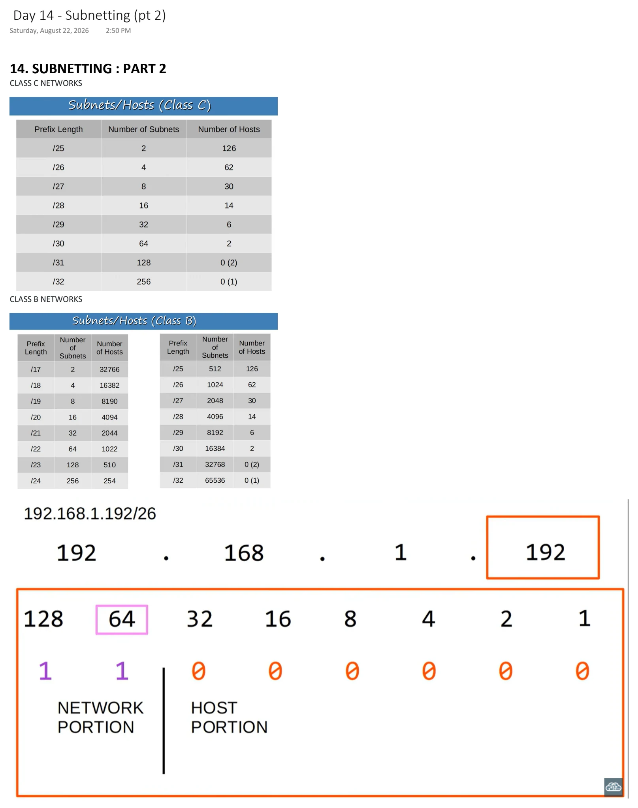

Subnetting (pt 2)
Download original PDF
Text view — Subnetting (pt 2)
Extracted from the original export. Diagrams and some formatting appear in the notes above.
Day 14 - Subnetting (pt 2) Saturday, August 22, 2026 2:50 PM 14. SUBNETTING : PART 2 CLASS C NETWORKS CLASS B NETWORKS